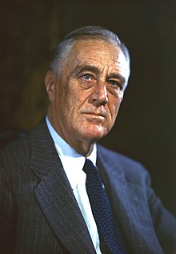

With World War II looming after 1938 in addition to the Japanese invasion of China and the aggression of Nazi Germany, Franklin D. Roosevelt gave strong diplomatic and financial support to China as well as the United Kingdom and the Soviet Union while the U.S. remained officially neutral. Following the Japanese attack on Pearl Harbor on December 7, 1941, he obtained a declaration of war on Japan the next day and on Germany and Italy a few days later. He worked closely with other national leaders in leading the Allies against the Axis powers.
